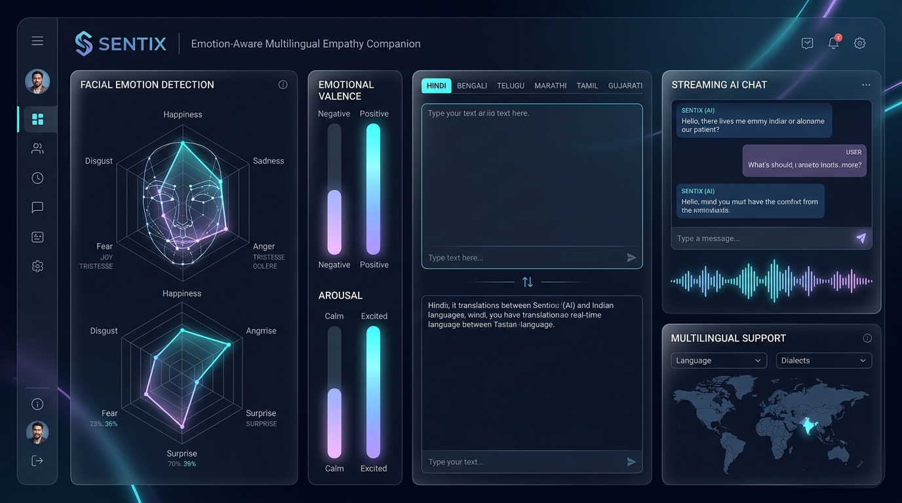

01 // MULTIMODAL AI / MAJOR PROJECT (GROUP 4) • 2026
Sentix — Emotion-Aware Multilingual Companion
An empathetic AI companion bridging human emotion and artificial intelligence. Unifies real-time webcam facial emotion recognition (DeepFace), bidirectional translation across 11 Indian languages (NLLB-200 distilled 600M), and empathetic response conditioning powered by Llama 3 via local Ollama with low-latency sentence streaming.
📹 OpenCV 30FPS
→
🎭 DeepFace Vision
→
🌐 NLLB-200 11L
→
🧠 Ollama Llama 3
→
⚡ Stream <45ms
FACIAL VISION
DeepFace Webcam
INDIC LANGUAGES
11 Dialects NLLB
INFERENCE ENGINE
Llama 3 (Ollama)